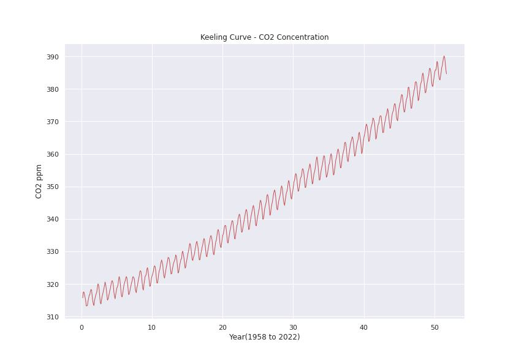
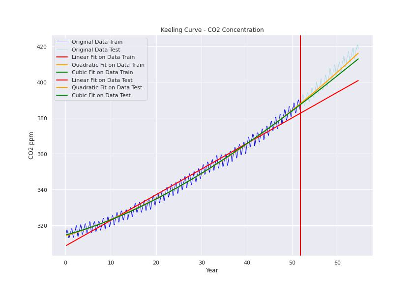
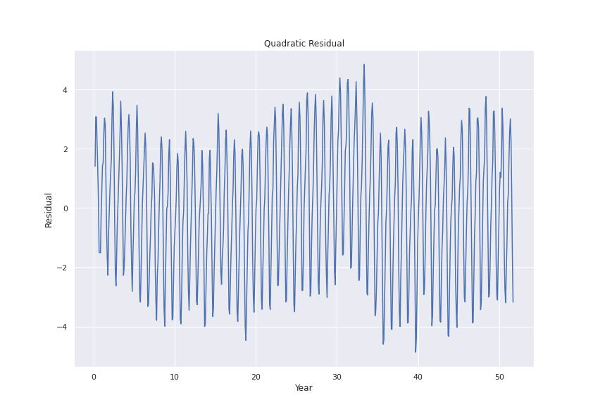
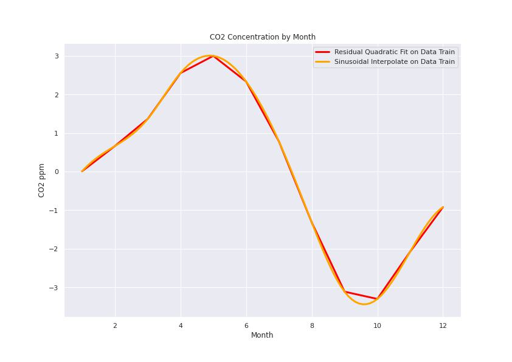
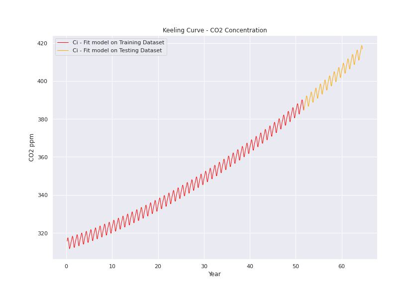
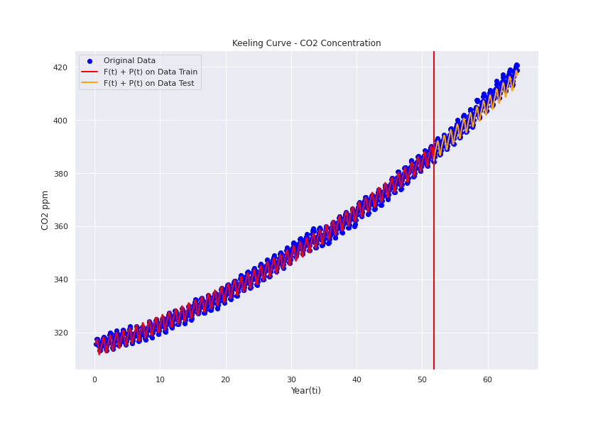

Time Series Analysis Project
Brief : This project aims to forecast Dioxid of Carbone(C02) concentration in the Atmosphere analyzing the trendy and seasonal behaviours.
Objective
Understand the C02 concentration and it variation in the atmostphere creating time series model.
Project Overview:
- Understand CO2 concentration from dataset.
- Explore and preprocess the data for further analyse and modeling.
- Create time series model for trendy and seasional components and compare which one is the best fit.
- Evaluate the model using testing dataset.
- Note: For more details HERE
Index
- 1. Data Understanding
- 2. Pre-Processing
- 3. Building Model
- 4. Evaluation
- 5. Conclusions and Lesson learned
1. Data Understanding
First we have to find data related to Dioxid of Carbone(C02) concentration in the Atmosphere. We can get this information from the Scripps Institution of Oceanography which can shoe monthly, weekly, dayli datasets. For our project, we will use the montly report: monthly_in_situ_co2_mlo.csv.
Note: For download dataset click HERE
The information recollected comes the observatory located at about 3,400 m altitude on Mauna Loa Volcano on Hawaii Island. This place has not influence of changing CO2 due it is near local vegetation and the wind prevail well-mixed air to the site. This information is provided from March 1958.
|
|
2. Pre-Processing
After a quick review, the raw dataset has some information which need to be pre-processed before using in the model:
- Usage only the columns year, month, co2(ppm).
- Add columns like time $t= (t+0.5)/12$.
- Delete comments in " " " and headers which cannot help us to understand the data(skiprows = 57).
- Drop co2 values equal to -99.99 which are some inhomogeneities.
- Drop NaN values and reset index.
|
|
For further modeling, we will split the data into train and test dataset.
|
|

3. Building Model
We will use information regarded to C02 concentration which can be model as:
$$ C_ i = F(t_ i) + P_ i + R_ i $$
- $F(t_ i)$ : Trendy pattern
- $P_ i$ : Seasonal pattern
- $R_ i$ : Residual
Later during evaluation we will see if this decomposition is meaningful. The main idea is to transform the data into stationarity
Trendy pattern:
For this part, we need to go throught some models like linear regression, polynomical grade 2 or 3 and try to verify which one can fit better.
|
|

Seasonal Pattern:
For model seasonal pattern, we can use the residuals of quadratic model because this model has a good RSME besides the other models. With this residual, we need to find the pattern which can be modeled.
|
|

As we can see, this kind of residual has the seasonal form. We will use the mean of months and interpolate as a periodic function which will be replicate:

Now we have the trendy and seasonal patterns, it is time to joint them and complete the model:
- Trendy Pattern: $ F(t) = 0.012107 * t^2 + 0.799038 * t + 314.132792 $
- Seasonal Pattern: $ P(t) = Sinosoidal(interpolate -by- month) $
So $ C_i = F(t)+P(t) $

4. Evaluation
For this part, we can use the following metrics to evaluate over the test dataset:
-
Evaluate RMSE:
- Root Mean Square Error: $ \sqrt{ \sum\limits_{i=0}^{n} \frac{(y - y_{pred})^2}{n}} $
-
Information Criteria AIC, BIC:
- AIC (Akaike Information Criteria): $ -2 * \text{log-likelihood} + 2k $
- BIC (Bayesian Information Criteria): $ -2 * \text{log-likelihood} + k \log(n) $
-
Meaningfull evaluation
|
|

|
|
5. Conclusions and Lesson learned
- The ratio between the range of values of $F(t)$ is 11 times that of $P(t)$ which means trendy model is a good estimation. On the other hand, seasonal model can be seen as a refinement of the model and does not affect the linear trend.
- The range of values of the residual is comparable, roughly 1.7 times the range of the residuals.
- AIC, BIC information for final model can be seen as a good approximation for eal CO2 concentrarion.
- RMSE of final model also has reach a bettet performance than quadratic and linear model.